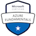

Links to profiles


Michael Corcoran
0785 902 4992 ● Manchester, UK ● corcoran909@gmail.com
Number of views:
Links to profiles
Number of views:
Experience
QA - Dev Ops and Digital Skills Bootcamp (Level 4)
SFIA Level 2 Validation
2022
Full time course covering basic IT skills such as Linux, Python, CI/CD pipelines (using Jenkins), using Azure and Docker. The project that shows the usage of these technologies can be found here
Senior Account Executive - moneycorp
2019 - 2020
Business development and relationship management role, sourcing and introducing corporate clients to Moneycorp's FX product set. Working in Leeds to cover the whole of the North of England.
Responsibilities included:
Barclays Bank - AVP Currency Corporate Sales
2010 - 2019
Relationship management role, looking after the FX needs of a portfolio of large corporate clients, analysing and managing client market risk using a full suite of vanilla and derivative products. Acheived sale revenue targets as well as defending market share and returns in a competitve market place. Spoke with and built long standing relationships with client representives including company owners and executives.
Experience of:
National Australia Bank - Partner Treasury Sales
2008 - 2010
Associate Treasury Sales
2006 - 2008
2022
Azure AZ-900 
2022
Chartered Institute for Securities and Investment:
2010/2006
University of Bradford - Peace Studies
1998
Technical Skills (beginner)